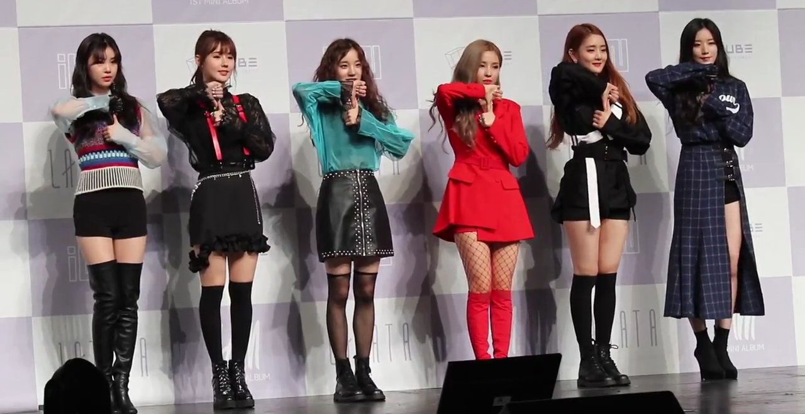

(G)-Idle é um grupo feminino de K-POP fundado pela Cube Entertainment, que debutou em 2 de maio de 2018.
O grupo debutou com seis membros: Soyeon, Yuqi, Shuhua, Minnie, Miyeon e Soojin. Atualmente o grupo está com cinco membros, pois, por diversas injustiças, Soojin foi retirada do grupo.